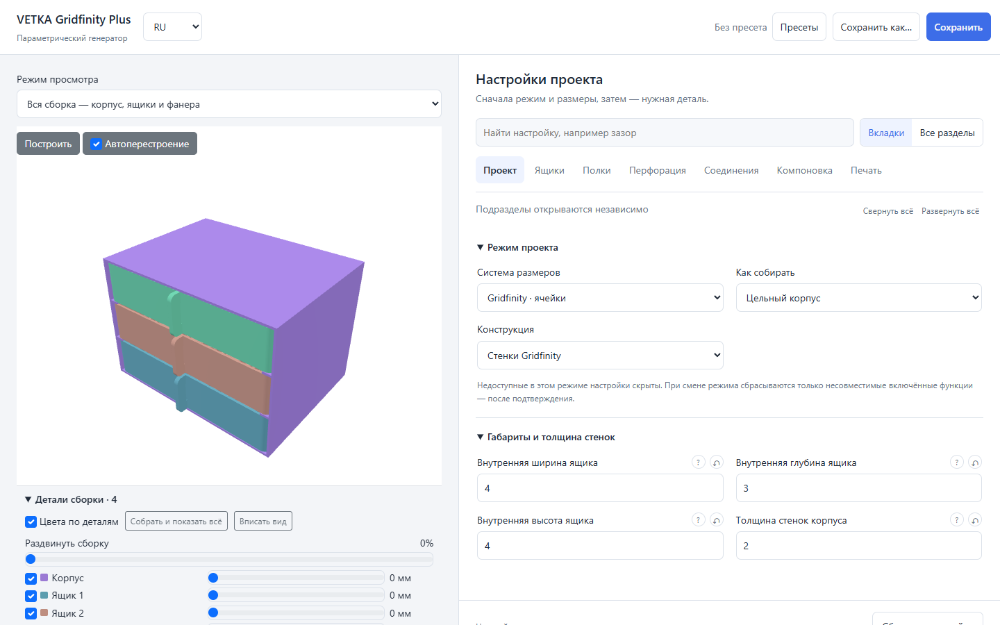

Две системы размеров
Работайте в ячейках Gridfinity или задавайте внешние размеры корпуса в миллиметрах. Высоту каждого ящика можно настроить отдельно.
Спроектируйте корпус и ящики под своё пространство. VETKA Gridfinity Plus — мой генератор для Gridfinity и проектов со своими размерами. Он подготовит детали для печати и раскроя.

01 / ВОЗМОЖНОСТИ
Один генератор — множество вариантов хранения. Настройте размеры, конструкцию и детали так, как удобно именно вам.
Посмотреть процесс ↓Работайте в ячейках Gridfinity или задавайте внешние размеры корпуса в миллиметрах. Высоту каждого ящика можно настроить отдельно.
Для корпусов в миллиметрах доступны печатные панели под склейку и вставки из листового материала, например фанеры или переплётного картона. Контуры для раскроя — в SVG и CSV.
Рассмотрите сборку целиком, скрывайте и раздвигайте детали. Настройте перфорацию, направляющие, ножки и соединители.
Сохраняйте пресеты в браузере или переносите их через JSON. Экспортируйте отдельные STL или комплект деталей в ZIP.
02 / ДВА ПОДХОДА
Генератор сохраняет работу с системой Gridfinity и даёт возможность создавать корпуса под другие размеры. Оба направления остаются частью проекта.
Проектируйте в привычных ячейках с шагом 42 мм. Доступны элементы Gridfinity, в том числе решётка, базовая плита и места для магнитов.
Режим Gridfinity будет развиваться дальше.Задавайте ширину, глубину и высоту корпуса в миллиметрах. В этом режиме доступны панели под склейку и листовые вставки.
В режиме ячеек панельная сборка пока недоступна.03 / ПРОЦЕСС
Гибкая настройка, понятный просмотр и файлы, готовые к следующему шагу.
НастройтеЗадайте размер, количество и высоту ящиков, конструкцию корпуса.
ПроверьтеПосмотрите модель и отдельные детали до изготовления.
СоздайтеСкачайте файлы для 3D-печати и контуры для раскроя.
04 / ИСТОРИЯ ПРОЕКТА
Я искала стеллажи для своей студии, но в продаже не нашла подходящих.
Тогда я задумалась о 3D-печати. Готовые модели тоже не подошли, а моделировать всё под стеллаж с нуля было лень. Так я наткнулась на генератор ящиков из Gridfinity Extended.
Его возможностей мне не хватало, поэтому я начала создавать более свободный генератор под свои задачи. Потом появилась идея сделать изготовление дешевле: добавить листовые вставки из фанеры или переплётного картона. А дальше — новые настройки, просмотр сборки и другие возможности.
Сегодня VETKA Gridfinity Plus — мой развивающийся проект для тех, кто тоже хочет сделать хранение под себя.
ВАШ ПРОЕКТ НАЧИНАЕТСЯ ЗДЕСЬ
Попробуйте генератор и создайте систему хранения под свои задачи.